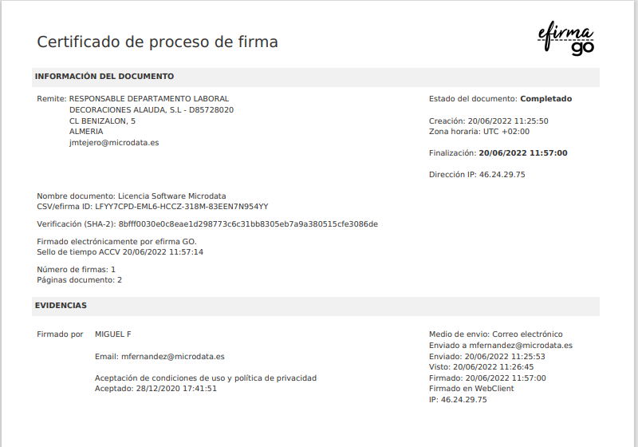

3.4 Certificado de firma de documentos
El certificado de firma de documentos es un tipo de certificado digital utilizado para garantizar la autenticidad, integridad y validez legal de un documento firmado electrónicamente. Se utiliza principalmente en el contexto de la firma de documentos legales, contratos, formularios, entre otros, en un entorno digital, de manera que tengan el mismo valor legal que una firma manuscrita.
Autenticidad:
Un certificado de firma de documentos autentica la identidad de la persona que firma un documento de manera electrónica. Esto garantiza que quien firma es quien dice ser, ya que el certificado está asociado a una entidad verificable (persona física o jurídica) a través de una Autoridad de Certificación (CA).
Integridad:
Al firmar un documento digitalmente, cualquier alteración posterior del archivo se detecta fácilmente. Si el documento es modificado después de ser firmado, la firma será invalidada, lo que ayuda a asegurar que el contenido no haya sido alterado desde la firma.
Validez Legal:
Los documentos firmados electrónicamente con un certificado de firma de documentos tienen la misma validez legal que los documentos firmados de forma manuscrita en muchos países, siempre que se cumplan los requisitos establecidos por las leyes locales, como la Ley de Firmas Electrónicas (por ejemplo, la eIDAS en la Unión Europea o la Ley ESIGN en Estados Unidos).
No Repudio: El uso de un certificado de firma de documentos asegura que la persona que firma no puede negar posteriormente haber firmado el documento. Esto se conoce como "no repudio" y se utiliza como prueba en disputas legales si fuera necesario.
Tipos de Firmas Electrónicas:
-Firma Electrónica Simple: Utiliza un certificado digital básico y no proporciona un alto nivel de verificación de la identidad.
-Firma Electrónica Avanzada (AES): Ofrece una mayor seguridad, ya que debe estar vinculada a la persona que la utiliza de manera única, permitiendo verificar la integridad del documento firmado.
-Firma Electrónica Cualificada (QES): Es la más alta categoría de firma electrónica, está basada en un certificado cualificado emitido por una Autoridad de Certificación confiable y cumple con los requisitos legales más estrictos. La QES tiene el mismo valor legal que una firma manuscrita en países que se rigen por regulaciones como eIDAS.
Componentes del Certificado de Firma de Documentos:
Clave privada: El titular del certificado mantiene la clave privada, que se utiliza para firmar electrónicamente el documento.
Clave pública: La clave pública se utiliza para verificar la firma y está asociada al certificado digital, el cual es emitido por una autoridad certificadora (CA).
Proceso de Firma Digital:
El firmante selecciona el documento que desea firmar y aplica su firma electrónica mediante un software que gestione el certificado digital.
El software firma el documento aplicando la clave privada asociada al certificado, lo que genera una firma electrónica única vinculada al contenido del documento.
El documento firmado puede ser validado por otras personas o entidades que utilicen la clave pública asociada al certificado del firmante.
Usos Comunes del Certificado de Firma de Documentos
Firmas de Contratos:
Es uno de los usos más comunes, permitiendo la firma de contratos comerciales, acuerdos de servicio, arrendamientos, entre otros, de forma digital, sin necesidad de que las partes estén presentes físicamente.
Documentos Gubernamentales:
Muchos gobiernos permiten o exigen la firma electrónica para la presentación de formularios, declaraciones de impuestos, solicitudes y otros documentos administrativos.
Documentos Legales: La firma electrónica se usa también en el ámbito legal, permitiendo la firma de testamentos, poderes notariales, actas y otros documentos jurídicos.
Banca y Finanzas: En el sector bancario, los contratos de préstamo, transferencias de fondos y otros documentos financieros también pueden ser firmados electrónicamente.
Registros y Notarización: La firma digital puede ser utilizada en procesos de notariado y registro, lo que facilita el proceso de certificación de documentos a distancia.
Seguridad: La firma digital se basa en criptografía avanzada, lo que asegura que solo el firmante puede haber firmado el documento y que nadie puede alterarlo sin invalidar la firma.
¿Cómo Obtener un Certificado de Firma de Documentos?
Elección de la Autoridad de Certificación (CA): Para obtener un certificado de firma de documentos, debes elegir una Autoridad de Certificación (CA) confiable, como DigiCert, Comodo, GlobalSign, entre otras.
Proceso de Validación: Deberás seguir un proceso de validación con la CA. Esto puede implicar proporcionar documentos de identificación para confirmar tu identidad.
Instalación del Certificado: Una vez validado y emitido el certificado, se instalará en tu sistema, y podrás usarlo con el software adecuado para firmar documentos.
Los certificados tienen una vigencia limitada (generalmente de 1 a 3 años), por lo que tendrás que renovarlos periódicamente.
